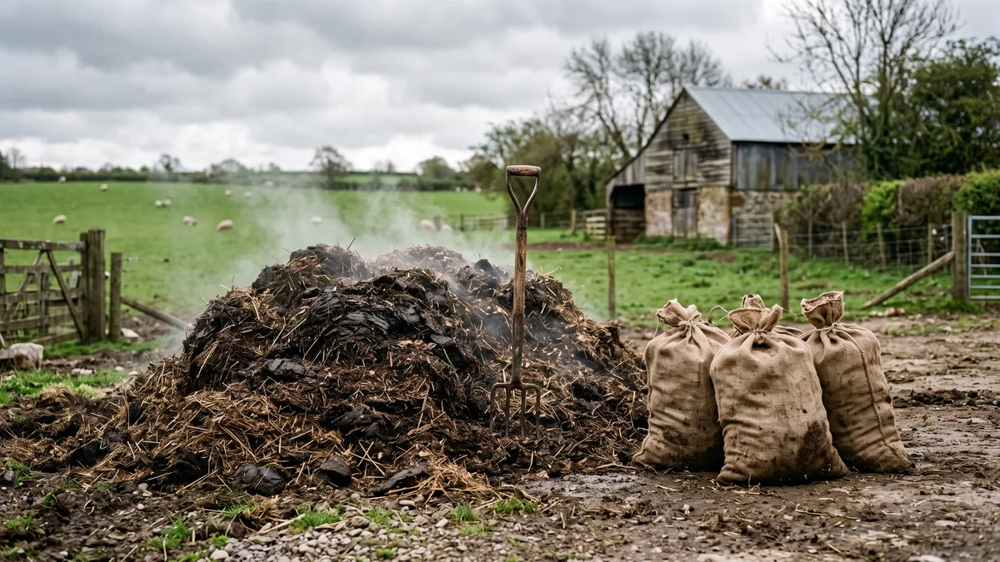

Tavuk gübresini gelire çevirmek: kompost ve satış
Kümesin arkasındaki o yığın pislik değil, ikinci ürün. Ham gübre neden yakar, kompost kaç ayda olur, 500 tavuk yılda kaç ton gübre çıkarır ve bunu nasıl paraya çevirirsin? Sahadan anlattım.

Kümesin arkasında biriken o yığına çoğu üretici "pislik" gözüyle bakar, burnunu tıkayıp kürekle uzağa atmaya çalışır. Halbuki o yığın, doğru davranana sürünün yem parasının bir kısmını geri getiren ikinci bir ürün. Tavuk gübresi tarladaki en güçlü organik gübrelerden biri; içindeki azot, fosfor ve potasyum sığır ahır gübresinin katbekat üstünde. Ama işin cilvesi de tam burada: bu güç ham haliyle silah gibi geri teper. Taze döktün mü domatesi de biberi de fideyi de yakarsın.
Aşağıda o yığını hem verimli toprağa hem de nakde nasıl çevireceğini sahadan anlatacağım. Neden ham gübre yakar, kompostu nasıl kurarsın, kaç ayda olgunlaşır, kokuyu ve sineği nasıl bastırırsın, çuvalla mı dökme mi satarsın. Bir de şu soruyu aklında tut: 500 tavuk bir yılda ne kadar gübre çıkarır, tahminin var mı?
Ham tavuk gübresi neden bahçeyi yakar?
Taze gübrenin iki büyük derdi var. Birincisi aşırı azot. Bu azotun çoğu ürik asit ve üre halinde; toprağa girer girmez hızla amonyağa ve nitrata döner. Bu ani azot patlaması kökün etrafındaki suyu çeker, bitki susuz kalmış gibi solar, kök resmen yanar. İkincisi amonyağın kendisi. Taze gübrenin o gözünü yaşartan keskin kokusu aslında havaya uçan azottur; yani hem bitkiye zarar, hem de senin cebinden buharlaşan gübre değeri.
Bir de ham gübrede çimlenmemiş yabani ot tohumu, hastalık etkeni ve zaman zaman sürüden gelen parazit yumurtaları bulunur. Yaprağı yenen sebzeye taze gübre sağlık açısından da risklidir. O yüzden kural nettir: taze gübre doğrudan sıraya girmez. Ya sonbaharda döküp kışı toprakta çürümeye bırakırsın, ya da doğru olanı yaparsın ve olgunlaştırırsın. İkincisi hem daha güvenli hem de gübrenin gücünü kaybetmeden saklar.
Tavuk gübresi kompost: yığını üç ayda kara altına çevirmek
Kompostlama, o yakıcı ham malzemeyi mikropların sindirip koyu renkli, ufalanan, orman toprağı gibi kokan bir gübreye çevirmesidir. Bütün sır karbon-azot dengesinde saklı. Tavuk gübresi kendi başına bir azot bombasıdır; öylece yığarsan kokar, sinek üşüşür, azot amonyak olup uçar. Yanına mutlaka karbon kaynağı katacaksın.
Kaba oran şudur: bir ölçek gübreye karşılık 2-3 ölçek karbonlu kuru malzeme. Bu malzeme saman, kuru ot, talaş, kuru yaprak, öğütülmüş mısır sapı, hatta kartelası sökülmüş karton olabilir. Kümes altlığını zaten talaş ya da samanla yönetiyorsan işin yarısı bitmiş demektir; altlıkla karışık çıkan gübre kompost karışımına baştan yakındır. Altlığı doğru seçmenin bu ikinci geliri nasıl kolaylaştırdığını kümes altlığı seçimi ve yönetimi yazısında da anlatmıştım.
Yığını kurarken malzemeyi katman katman ser: bir kat gübre, üstüne kalın bir kat karbon, yine gübre, yine karbon. Yığının en az 1 metre eninde ve yüksekliğinde olması lazım; küçük yığın ısınmaz. İki şeye dikkat edeceksin:
- Nem: Bir avuç sıktığında sünger gibi nemli olmalı ama parmağının arasından su damlamamalı. Kuru kalırsa mikrop çalışmaz, cıvık olursa kokar ve çürür. Hedef aşağı yukarı %50-60 nem.
- Hava: Kompost oksijenle çalışır. Yığını yaz aylarında 10-15 günde bir, kışın ayda bir çatalla ya da kepçeyle alt-üst et. Havalanmayan yığın havasız kalır, o zaman leş gibi kokar; koku çıkıyorsa ya çok ıslaktır ya da çevrilmesi gecikmiştir.
Süreye gelince: yazın sıcağında iyi yönetilen yığın 2-3 ayda olgunlaşır, kışın soğukta bu süre 4-6 aya uzar. Bittiğini kokusundan anlarsın; amonyak gitmiş, yerini toprak kokusu almışsa, malzeme koyulaşıp ufalanıyorsa gübren hazırdır. Bu noktadan sonra bitkinin kökünü değil, toprağını besler.
Ham gübre mi, olgun kompost mu? Karşılaştırma
İki halin arasındaki fark sandığından büyük. Aynı gübre, bekletilince hem güvenli hem de satılabilir hale gelir.
| Özellik | Ham (taze) gübre | Olgun kompost |
|---|---|---|
| Bitkiye etki | Kökü yakar, doğrudan kullanılmaz | Güvenli, doğrudan sıraya verilir |
| Koku | Keskin amonyak | Toprak kokusu, hafif |
| Yabani ot tohumu / hastalık | Canlı, bulaşır | Isıyla büyük ölçüde ölür |
| Azot kaybı | Havaya hızla uçar | Bünyede tutulur, yavaş salınır |
| Sinek / kurt | Cazibe merkezi | Sorun olmaz |
| Satış değeri | Düşük, alıcı çekingen | Yüksek, çuvala girer |
| Hazır olma süresi | Hemen ama riskli | Yaz 2-3 ay, kış 4-6 ay |
Kurutma: çuvala girecek gübre nasıl hazırlanır?
Kompostu kendi tarlanda kullanacaksan nemli haliyle serebilirsin. Ama çuvalla satacaksan bir adım daha var: kurutma. Nemli gübre hem ağır olduğu için boşuna nakliye parası yediremezsin, hem çuvalın içinde küflenir. Olgunlaşmış gübreyi güneşli, üstü örtülü bir zeminde ince serip birkaç gün kuruttuğunda nemi ciddi biçimde düşer, tozlaşır. Ardından kaba bir elekten (ızgara tel yeter) geçirip iri parçaları ayırırsan elinde temiz, homojen, çuvala hazır bir ürün kalır. Alıcı gözüyle temiz, elenmiş, kuru gübre ile cıvık yığın arasında dağlar kadar fark var.
500 tavuk yılda ne kadar gübre çıkarır?
Rakamı görünce çoğu kişi şaşırıyor. Bir yumurtacı tavuk günde ortalama 120-150 gram taze dışkı bırakır. Yıla vurduğunda tavuk başına kabaca 45-55 kilo eder. Altlıkla karışınca hacim daha da büyür. İşte kaba bir tablo:
| Sürü (tavuk) | Yıllık taze gübre (yaklaşık) | Olgun / kurutulmuş (yaklaşık) |
|---|---|---|
| 100 | ~5 ton | ~2-2,5 ton |
| 500 | ~25 ton | ~10-12 ton |
| 1.000 | ~50 ton | ~20-25 ton |
| 2.000 | ~100 ton | ~40-50 ton |
Kompostlama ve kurutma sırasında su ve gaz kaçtığı için ağırlık aşağı yukarı yarı yarıya düşer; yani 500 tavuktan yılda 10-12 ton satılabilir olgun gübre çıkar. Bunu güncel çuval fiyatıyla kendin çarp; küçümsenecek bir ek gelir olmadığını göreceksin. Zaten tavukçuluğun kâr hesabını yaparken bu kalemi mutlaka hesaba kat; tavukçuluk kârlı mı yazısında da vurguladığım gibi, gübreyi çöp sayan üretici gelirinin bir dilimini kürekle atıyor demektir.
Değerlendirme yolları: bahçe, satış, biyogaz
Elindeki olgun gübreyi üç ana yoldan değerlendirebilirsin.
- Kendi tarlan ve bahçen: En kârlı yol çoğu zaman budur. Dışarıdan kimyasal gübre almazsın, toprağın organik maddesi artar, birkaç yıl içinde tarla resmen değişir. Meyve ağacı diplerine, sebze sıralarına, tahıl öncesi tabana serebilirsin. Sofraya yakın sebzeye mutlaka olgun kompost kullan.
- Satış: Fazlasını çuvalla ya da dökme satarsın. Bahçe meraklısı, seracı, fidancı, hobi bahçıvanı sürekli alıcıdır. Yumurtayı aracısız satmayı beceren üretici gübre için de aynı kanalları kullanabilir; satış ağı kurmanın mantığını köy yumurtası nasıl satılır yazısındaki kanallarla birebir eşleştir.
- Biyogaz: Sürü belli bir büyüklüğü geçtiğinde (genelde birkaç bin baş ve üzeri) taze gübreyi bir biyogaz tesisinde çürütüp hem metan gazı hem de elektrik/ısı üretmek mümkün. Küçük sürü için yatırımı ağır bir yol ama büyüyen işletmenin ufkunda tutması gereken bir seçenek; çıkan posanın kendisi de kaliteli gübredir.

1.000 Tavukluk Tavuk Çadırı
Gübreyi düzgün toplamanın ve kuru altlık tutmanın yarısı barınakta biter: 1000 tavukluk yalıtımlı Tavuk Çadırı'nın planlı zemini ve dengeli havalandırmasıyla altlık cıvımaz, gübre kürekle temiz kalkar, kompost için hazır çıkar; 3-4 kat yalıtımlı, TSE damgalı brandayla 81 ilde anahtar teslim kurulur.
Satış: çuvallı mı, dökme mi daha mantıklı?
İki yolun da yeri var, hangisini seçeceğin emek ve alıcı meselesi.
Çuvallı satış kilogram başına en yüksek geliri verir. Kurutur, eler, 25-40 kiloluk çuvallara doldurur, etiketlersin. Şehirdeki bahçe marketine, çiçekçiye, hobi bahçıvanına, hatta internetten kargoyla satabilirsin. Ama karşılığında emek, ambalaj ve depo ister. Küçük ölçekte en kârlı yol budur.
Dökme satış ise kolay yoldur. Traktör römorkuyla ya da tonla, olgunlaşmış gübreyi komşu çiftçiye, bağ-bahçe sahibine toptan verirsin. Birim fiyat düşüktür ama emek de azdır, elindeki tonlarca gübreyi bir hamlede eritirsin. Aracıya kaptırırsan fiyatın dibini görürsün; mümkünse doğrudan üreticiye sat. Sana bir tavsiye: küçük başladıysan çuvallı git, hacim büyüdükçe bir kısmını dökme boşalt. İkisini karıştırmak en dengeli yoldur.
Koku ve sinek: komşuyu küstürmeden gübreyi biriktirmek
Gübre işinin en sinsi tarafı burasıdır. Açıkta, nemli, örtüsüz bir gübre yığını yazın sinek cenneti olur; dişi sinek nemli gübreye yumurtlar, birkaç günde kurtlanır. Aynı yığın leş gibi kokup komşuyu belediyeye koşturur. Oysa çözüm basit: yığının üstünü kalın bir karbon tabakasıyla (saman, kuru ot, talaş) ört, kuru tut, düzenli çevir. Örtülü ve havalanan yığın ne kokar ne kurtlanır.
Bir de yem ve gübrenin ortak baş belası: fare. Dökülen yem ile gübre yığını fareye hem yiyecek hem yuva sunar; gübre deposunu yem ambarının ve kümesin dibine kurma. Kemirgenle baştan doğru mücadele için kümeste fare ve haşere kontrolü yazısındaki rutini uygula. Kümesin kendi içindeki amonyak ve koku meselesini de ayrı ele almıştım; altlığı kuru tutmak hem kümesi hem gübreni kurtarır, detayını kümes havalandırması ve koku kontrolü yazısında bulursun.
Son bir şey: gübre deposunu yağmurdan koruyacak, üstü örtülü, betonlu ya da sıkıştırılmış bir zemine kur. Yağmur suyu gübreyi yıkarsa hem besin değeri toprağa akıp gider hem de o sızıntı dereyi, kuyuyu kirletir, başın derde girer. Bir köşe, bir sundurma, bir de disiplin: o "pislik" yığını, doğru elde yılda tonlarca satılabilir ürüne döner. Kürekle atacağına kürekle çevir; bütün fark orada.
Sık sorulanlar
Ham tavuk gübresi bahçeye doğrudan atılır mı?
Tavuk gübresi kompost kaç ayda olgunlaşır?
Tavuk gübresini kompost yaparken neyle karıştırmalı?
500 tavuk yılda ne kadar gübre üretir?
Tavuk gübresi çuvallı mı dökme mi satılır?
Gübre yığınındaki koku ve sinek nasıl önlenir?
Projenizi birlikte planlayalım
Kapasitenizi ve bölgenizi yazın; ölçü ve teklifi birlikte çıkaralım.
Kapasitenizi yazın